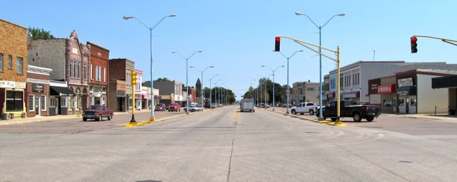
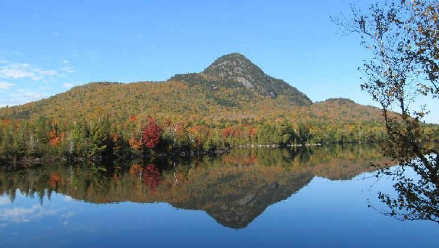
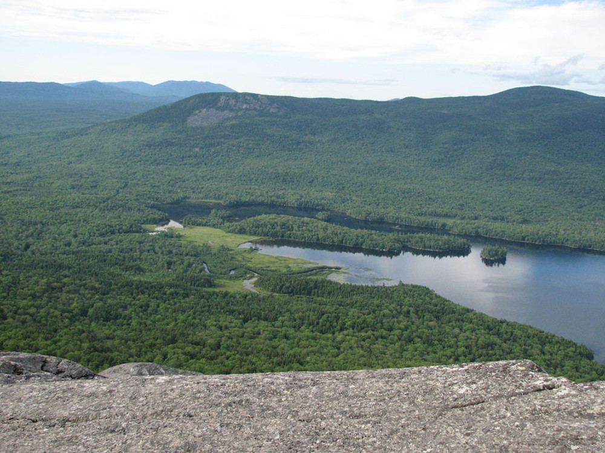

Places
Onawa, Iowa
Onawa is a town located at 42.027490, -96.096513. It was established in 1857 and has a population of 2,906. According to Wikipedia, it has the widest main street in the continental US. The iconic eskimo pie dessert was created here.This is also the home of a woman named Jody Ewing who has dedicated her life to reporting on Iowa cold cases through her website. This is probably the biggest result when you search “Onawa.” I first heard of it when a childhood friend let me know she had flown over the town. Never have been but it’s on my bucket list - mostly for the name but also the eskimo pie. There are also lots of businesses and organizations named Onawa here, as well, including a library, annual bike ride, and orthodontist.

Onawa, Maine
Located in Maine, it’s a mystery how this town ended up with what is a name of Ojibwe origin. Some speculate that it is named after a native girl who committed suicide or maybe it’s just named from the Song of the Hiawatha. There are no photos readily available in search results since what most comes up is the Lake nearby or the train station. I assume the town still exists, though?

Lake Onawa
Located by the town of Onawa, Maine, Lake Onawa is roughly 15 miles around and 19 feet deep. The lake is can be seen from a peak of Borestone Mountain along the Appalachian Trail. The lake is either named from the Song of the Hiawatha, or, according to “Appalachian Trail Names: Origins of Place Names Along the AT” it is named after a native girl named Onawa who committed suicide by the Lake and is buried there.
 
Onawa Yoga Studio
Located El, Paso Texas, Onawa is a yoga studio that focuses on the connection between mind, body, and spirit. It has (1) 5-star rating on Google. I found this yoga studio while attempting to find photos of Onawa, Maine. Interestingly enough, this studio is located in my mom’s hometown so we’re somewhat connected?